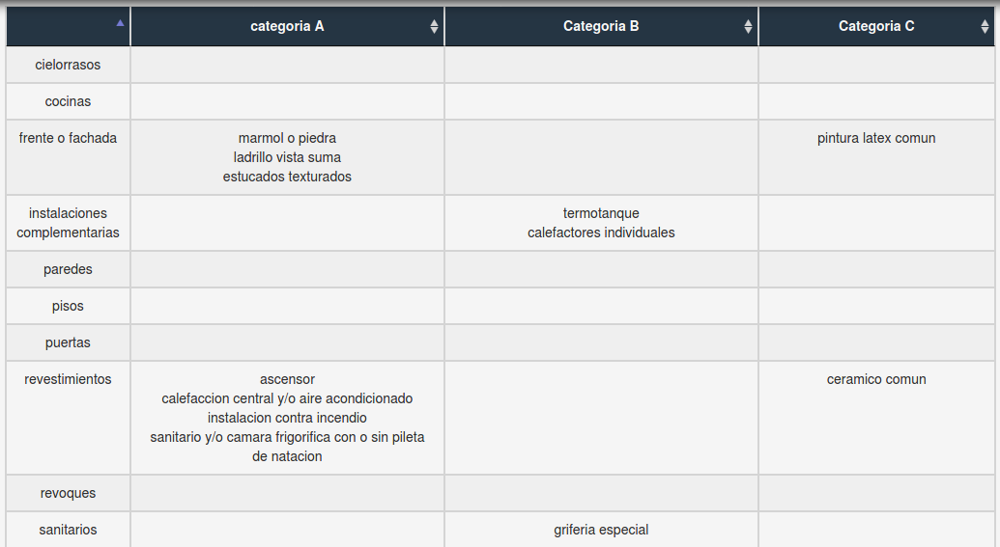
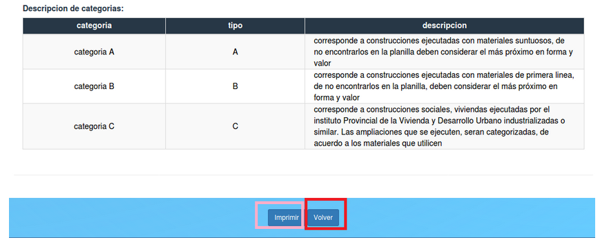

Inspecciones¶
 Se visualizan todas las inspecciones realizadas al tramite y se puede imprimir haciendo click sobre el boton “Imprimir” enmarcado en rosa y volver haciendo click sobre el boton “Volver” enmarcado en rojo.
Se visualizan todas las inspecciones realizadas al tramite y se puede imprimir haciendo click sobre el boton “Imprimir” enmarcado en rosa y volver haciendo click sobre el boton “Volver” enmarcado en rojo.